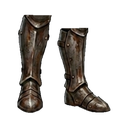
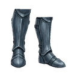
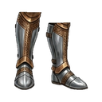
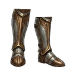
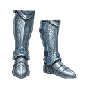
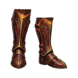
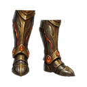
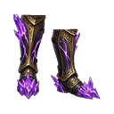
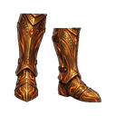

Copper Boots T1
T1Basic copper boots
STATS Normal +0
- Defense +10
- Health +5
- Dropped by
- Wild Bat Whispering Forest
Cave Spider Dark Cave D1

Basic copper boots

Heavy iron boots

Swift steel boots

Holy silver boots

Golden march boots

Platinum heavy boots

Wind celestite boots

Adamantite foot guards

Magma obsidian boots

Dragon flight boots